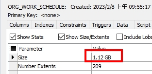
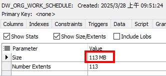
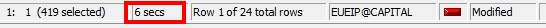
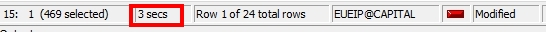

Oracle 優化表重建與 Tablespace 分離
最近被請求協助排查某個系統操作異常緩慢的問題。
第一次執行會卡住近 60 秒，第二次則明顯變快，初步判斷與資料庫快取有關。
嘗試清除 SHARED_POOL 後，雖然有恢復正常(?)速度，但效能還是會隨時間逐漸變慢。
深入分析後發現，該操作會對某張資料表進行多次查詢。
雖然針對其中一段 SQL 做優化，執行時間確實有改善，但整體仍偏慢
且該功能針對表的操作不只這一段 SQL，要全部調整也相當耗時。
最後與公司負責資料庫的同仁(DBA)討論後，尋求其他解法，
並在不動原有資料表結構與 SQL 語法的前提下，嘗試從資料庫層面著手改善。
資料庫版本：Oracle 10g(10.2.0.4.0)
解法概述
- 建立新的 Tablespace：專門存放大型或常查詢的表。
- 重建 Table 結構：解決內部區塊分布凌亂的問題，降低 I/O 成本。
重建表 = 就像整理硬碟一樣，把資料整包搬到新空間排好隊，也能清掉沒用的空間與歷史資料
Table 重建步驟
為保留 index、constraint、comment、GRANT 權限，沒有使用快速複製語法，
而是事先建立一個相同結構的表，並指定建立在新的 Tablespace 中。
以下用 ORG_WORK_SCHEDULE 當範例
-- 可再檢查原 Table 是否有相關 Trigger、程式排程等等 |
表格儲存空間觀察
| 表格 | 大小 |
|---|---|
| 舊表 | 1.12 GB |
| 新表(重建後) | 113 MB |
舊表（1.12 GB）

新表（重建後，113 MB）

效能比較記錄
| 測試情境 | 執行時間 |
|---|---|
| 舊表、未清除 SHARED_POOL | 60 秒以上 |
| 舊表、已清除 SHARED_POOL | 約 6 秒 |
| 針對優化 SQL 後 | 3 秒 |
| 表重建 + Tablespace 分離 | 不到 1 秒 |
舊表、已清除 SHARED_POOL（約 6 秒）

針對優化 SQL 後（約 3 秒）

表重建 + Tablespace 分離（33 毫秒）
只針對單獨表優化?
查詢資料時，我也詢問 AI 是否能針對單一資料表進行優化，
常見建議是使用以下語法針對表空間進行收縮：
ALTER TABLE ORG_WORK_SCHEDULE ENABLE ROW MOVEMENT; |
實際詢問 DBA 後補充如下：
- SHRINK SPACE 會對 Tablespace 產生 I/O 負擔，應避開系統忙碌時段。
- 若僅針對單一表處理，成效有限；若多數表一起執行，空間整理效果較佳
- SHRINK 操作屬於會產生變更的指令，會記錄在 redo/undo log 中，因此也會佔用一定資源。
雖然可用，但效果有限，最後仍選擇以表重建搭配 Tablespace 分離來優化。
白話就是說，問題不只在這張表，整個 Tablespace 中其他表也可能碎掉。
只整理其中一張，就像只清理桌面，但整個房間還是亂的，走起來還是卡。
結論
SQL 語法與資料表結構雖然很重要，但資料儲存位置、空間使用狀況等硬體層面的優化，同樣會對效能帶來顯著影響。
這是一次蠻有感的優化，雖然只是簡單的「搬資料」和「調整位置」，但效能提升超出預期，也感謝公司 DBA 的協助，讓我學到不少。